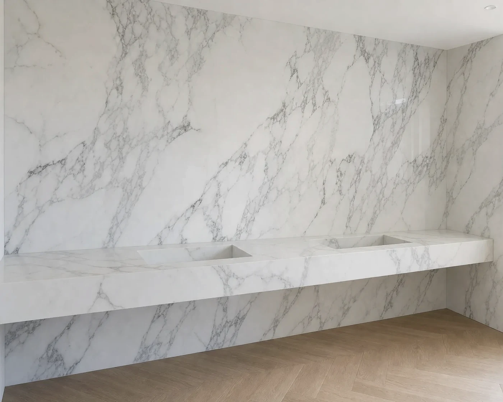
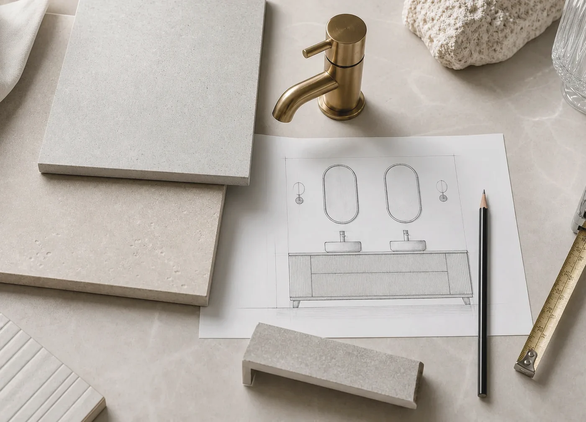

Artiling Studio creates bespoke porcelain sinks, large-format tiling, wet rooms and refined bathroom surfaces for homes across London.
Our work is built around precision, clean detailing and a careful process from first measurement to final installation.
Surface-Led Work
Crafted surfaces. Considered details. Built properly.
Artiling Studio is a London-based specialist studio focused on high-quality porcelain fabrication and detailed tiling work.
From bespoke wall-mounted sinks to large-format bathroom surfaces, every project is approached with attention to proportion, alignment, mitred edges and long-term durability.
We work closely with homeowners, designers and contractors to turn practical requirements into clean, elegant finishes.

Experience
Led by experience, finished with care
Our studio is built on over 26 years of hands-on experience in tiling, bathroom surfaces and porcelain installation.
That experience helps us understand the details that make a project feel refined: clean joints, accurate measurements, balanced layouts, discreet drainage, proper substrate preparation and a finish that feels intentional.
From Idea to Installation
A clear process from idea to installation
Every project begins with understanding the space, material and final look the client wants.
Where needed, we prepare visual previews, confirm key dimensions, discuss porcelain or tile options, and make sure technical details are clear before fabrication or installation begins.
This helps avoid guesswork and gives every project a more accurate, controlled result.

Porcelain & Tiling
Specialist porcelain and tiling work
Focused work for bathrooms, wet rooms, vanity areas and porcelain features where surface detail matters.
-
01
Bespoke porcelain sinks
Made-to-measure sinks shaped around the room, brassware and surrounding surfaces.
-
02
Large-format porcelain tiling
Porcelain walls, floors and feature planes planned for clean alignment and fewer visual breaks.
-
03
Wet rooms and bathroom tiling
Waterproofed bathroom surfaces with careful setting out, drainage and finish control.
-
04
Mitred edges and fabricated details
Porcelain returns, edges and details made to feel precise, calm and integrated.
-
05
Porcelain vanity tops and feature surfaces
Vanity tops, splashbacks and feature surfaces planned around proportion and daily use.
-
06
Bathroom surface upgrades and finishing details
Targeted surface upgrades where measurements, preparation and finish are the difference.
Precision
Precision over shortcuts
Clients choose Artiling Studio because we care about the details that are easy to overlook but impossible to hide once the work is finished.
We take time to understand the project properly, confirm important measurements and deliver work that feels refined, practical and built to last.
Start a Project
Planning a bathroom, wet room or bespoke porcelain feature?
Tell us what you are working on and we'll help you understand the best approach, materials and next steps.